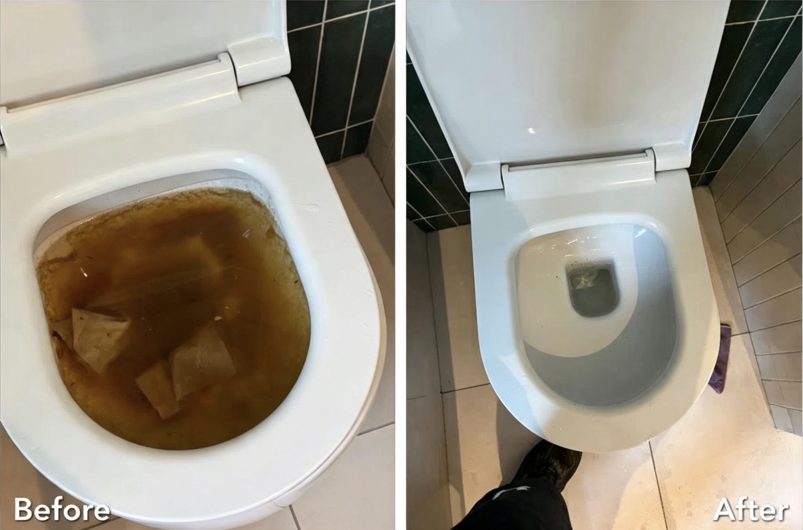
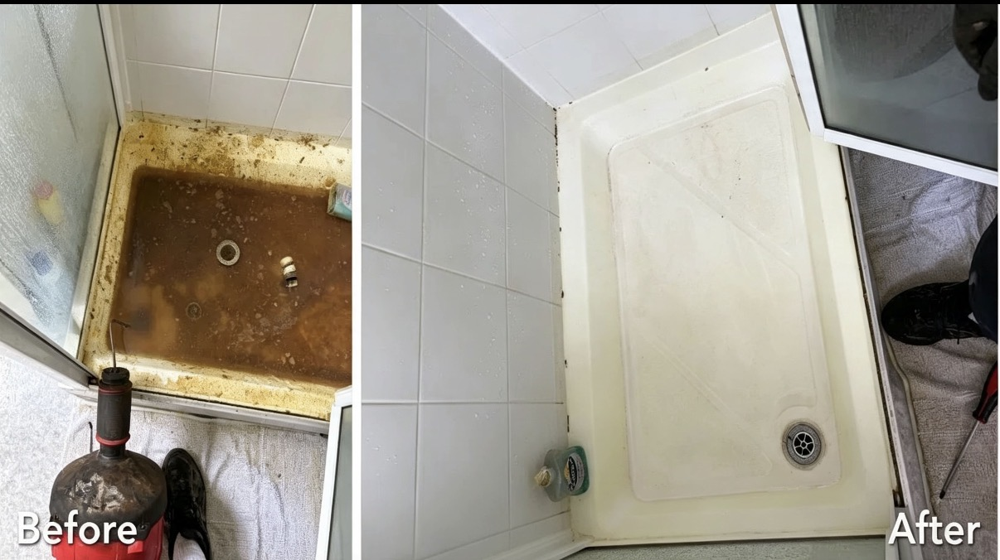

Recent Work
A selection of our latest drainage jobs.




What Our Customers Say
⭐⭐⭐⭐⭐
"Arrived within an hour and cleared our blocked drain straight away. Brilliant service!"
— Sarah, Croydon⭐⭐⭐⭐⭐
"Very professional, fair price and explained everything clearly. Highly recommend."
— James, Bromley⭐⭐⭐⭐⭐
"Excellent emergency response late at night. Problem fixed quickly."
— Emma, South LondonAreas We Cover
📍 Croydon
📍 Bromley
📍 Sutton
📍 Wimbledon
📍 Kingston
📍 Mitcham
📍 Streatham
📍 Clapham
📍 Central London
Don't see your area? Call us — we cover London and the surrounding areas.
Need an Emergency Drain Engineer?
Available 24 Hours a Day • 7 Days a Week
📞 Call 07506 491178Contact FLOWPOINT Drainage
📞 Phone: 07506 491178
📧 Email: Harvey@flowpointdrainage.com
📍 Coverage: London & Surrounding Areas
🕒 Available: 24 Hours • 7 Days a Week